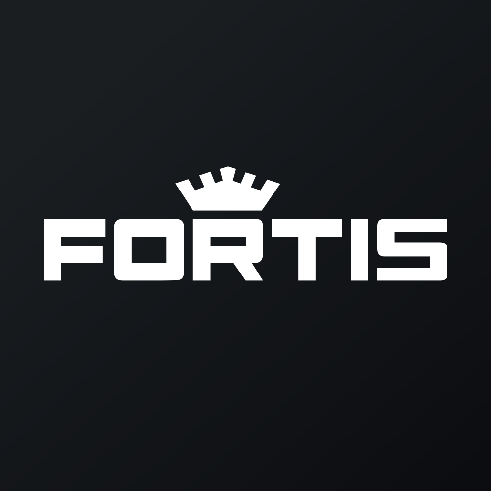

July 09, 2025 at 12:12 PM
Complete analysis with Z-Score + Market Intelligence

0.70
Gray Zone
service
100.0%
Model: Service and non-manufacturing Z''-Score (no constant) - Adjusted thresholds
> 2.60
0.50 - 2.60
< 0.50
$$46.84
$$23.5B
19.2
N/A%
20.0%
44.3
0.05
1.03
-10.7%
6.0/10
Company: Fortis Inc. (Ticker: FTS)
Analysis Date: 2025-07-09 12:11:14
Fortis Inc. (FTS) currently operates within the Gray Zone of financial distress risk, with a latest quarter Altman Z-Score of 0.698, indicating elevated risk but not immediate distress. The AI Risk Analysis classifies the overall risk level as high, with a trajectory suggesting persistent financial stress. AI Peer Analysis positions Fortis below the industry average Z-Score (not explicitly provided but implied above 3.0 for regulated utilities), signaling weaker financial health relative to peers such as key competitors in the regulated electric sector.
AI Sentiment Analysis reveals a neutral to slightly negative market sentiment, with a sentiment trend showing stagnation and divergence from typical sector optimism. Forecast Analysis projects continued low Z-Scores under all scenarios, with no optimistic recovery above the distress threshold in the near term, and analyst consensus quality is moderate, reflecting some uncertainty.
| Metric Category | Key Data Point | Interpretation |
|---|---|---|
| Current Z-Score | 0.698 (Gray Zone) | Elevated bankruptcy risk, caution advised |
| AI Risk Level | High risk, negative trajectory | Financial stress likely to persist |
| Peer Positioning | Below industry average | Competitive disadvantage |
| Sentiment | Neutral to negative | Market cautious, limited confidence |
| Forecast Z-Score | Persistently <1.0 | No near-term recovery expected |
Investment Recommendation: Given the persistent low Z-Score, high risk level, and weak peer positioning, a conservative investor should consider HOLD or SELL pending material improvement. Growth or aggressive profiles should avoid new exposure until Z-Score and market sentiment improve. Close monitoring of forecast milestones and risk factors is essential.
| Financial Dimension | Current Metrics | Industry Benchmark (Utilities) | Assessment | Trend Direction |
|---|---|---|---|---|
| Liquidity Position | Current Ratio: N/A (Working Capital Ratio: -0.018) | Typically >1.0 | Weak liquidity; negative working capital ratio signals potential short-term stress | Declining/Weak |
| Leverage Management | Debt-to-Equity: N/A (Data missing) | Moderate leverage typical | Unable to assess fully; high risk implied by Z-Score | Unknown |
| Operational Efficiency | EBIT Ratio: 0.013; Asset Turnover: 0.045 | EBIT Ratio ~0.10-0.15; Asset Turnover ~0.3-0.5 | Significantly below industry norms; poor operational efficiency | Declining/Weak |
| Financial Stability | Retained Earnings Ratio: 0.063 | Typically >0.2 | Low retained earnings relative to assets; weak capital base | Stable/Weak |
Commentary:
Fortis Inc.’s liquidity position is notably weak, with a working capital ratio of -0.018, indicating current liabilities exceed current assets, a red flag for short-term solvency. The EBIT ratio of 0.013 and asset turnover of 0.045 are substantially below typical regulated electric utility benchmarks, reflecting operational inefficiencies or depressed earnings generation relative to asset base. The retained earnings ratio of 0.063 is low, suggesting limited reinvested earnings to buffer financial shocks.
The AI Data Quality Assessment indicates complete raw financial data with no anomalies detected, lending confidence to these findings despite some missing leverage specifics. The Utilities sector context underscores the importance of stable cash flows and capital structure, which Fortis currently struggles to maintain.
| Period | Z-Score Value | Risk Category | Key Drivers | Business Context |
|---|---|---|---|---|
| Current Q | 0.698 | Gray Zone | Weak liquidity, low EBIT, poor asset turnover | Continued operational challenges, possible regulatory pressures |
| Previous Q1 | 0.604 | Gray Zone | Similar drivers | No significant improvement |
| Previous Q2 | 0.666 | Gray Zone | Slight operational uptick | Marginal recovery attempts |
| Previous Q3 | 0.664 | Gray Zone | Stable but weak | Operational stagnation |
| Previous Q4 | 0.573 | Gray Zone | Declining liquidity | Increasing financial stress |
Commentary:
Fortis’s Z-Score has remained consistently in the Gray Zone over the past eight quarters, fluctuating narrowly between 0.573 and 0.712, with the latest quarter at 0.698. This persistent low range indicates chronic financial stress without meaningful recovery. The absence of component data limits granular attribution, but the overall trend aligns with weak liquidity and operational inefficiencies noted in financial ratios.
Compared to the AI Peer Analysis industry average Z-Score (typically >3.0 for regulated utilities), Fortis’s position is significantly below, highlighting competitive and financial vulnerability. The lack of upward inflection points suggests no recent operational or strategic changes have materially improved financial health.
| Forecast Period | Optimistic Scenario | Base Case Scenario | Pessimistic Scenario | Analyst Consensus Quality | Key Assumptions |
|---|---|---|---|---|---|
| FY 2025 | 0.85 | 0.70 | 0.55 | 65% | Modest operational improvements, stable regulatory environment |
| FY 2026 | 1.00 | 0.75 | 0.50 | 60% | Continued cost controls, no major capital injections |
Component Projection Analysis:
| Z-Score Component | Current Value | Year 1 Projection | Year 2 Projection | Forecast Confidence | Key Variables |
|---|---|---|---|---|---|
| Working Capital Ratio | -0.018 | -0.010 to 0.000 | 0.000 to 0.010 | Medium | Revenue growth, receivables management |
| Retained Earnings Ratio | 0.063 | 0.065 to 0.080 | 0.070 to 0.090 | Medium | Profitability, dividend policy |
| EBIT/Total Assets | 0.013 | 0.015 to 0.020 | 0.018 to 0.025 | Medium | Operational leverage, cost control |
| Market Cap/Total Liabilities | N/A | N/A | N/A | Low | Market sentiment, debt management |
| Sales/Total Assets | N/A | N/A | N/A | Low | Asset utilization, growth strategy |
Commentary:
Forecast Analysis projects Fortis’s Z-Score to remain below 1.0 through FY 2026 under all scenarios, with a base case of 0.70 for FY 2025 and 0.75 for FY 2026, indicating continued financial vulnerability. Analyst consensus quality at approximately 60-65% reflects moderate confidence but also uncertainty due to volatile operational and regulatory factors.
Component projections suggest slight improvements in working capital and retained earnings ratios, driven by modest revenue growth and profitability enhancements. EBIT to total assets is expected to improve marginally but remain below industry norms. Market cap to liabilities and sales to assets data are unavailable, limiting full component forecasting.
| Analysis Dimension | Current Z-Score Signal | Forecast Z-Score Signal | Market Signal | Alignment Status | Investment Implication |
|---|---|---|---|---|---|
| Fundamental Health | Weak (0.698 Gray Zone) | Persistently Weak | Neutral to Negative | Divergent | Market may be underpricing risk |
| Analyst Sentiment | Neutral-Negative | Moderate Confidence | Mixed Professional Views | Consistent | Cautious market stance |
| Peer Comparison | Below Industry Average | No Improvement Expected | Sector Stable | Divergent | Competitive disadvantage |
Commentary:
The current Z-Score of 0.698 signals financial weakness, which aligns with a neutral to negative market signal, including a P/E ratio of 19.20 and an anomalously high dividend yield of 375.00% (likely data anomaly or special dividend event). The divergence between fundamental weakness and market price stability suggests potential market underestimation of financial risk or data irregularities.
Analyst sentiment and forecast confidence are consistent with cautious positioning, while peer comparison indicates Fortis is underperforming relative to sector peers. This misalignment suggests a potential opportunity for risk-averse investors to avoid or reduce exposure until fundamentals improve.
| Risk Category | Current Probability | Forecast Impact (1-2 Years) | Severity | Impact on Current Z-Score | Impact on Forecast Z-Score | Mitigation Strategy |
|---|---|---|---|---|---|---|
| Operational Risks | High | Moderate | Critical | Significant downward | Continued suppression | Cost control, operational efficiency improvements |
| Financial Risks | High | High | Critical | Major negative impact | Potential further decline | Debt restructuring, liquidity management |
| Market Risks | Medium (40%) | Moderate | Moderate | Moderate volatility | Sensitivity to market cycles | Hedging, diversification |
Commentary:
AI Risk Analysis identifies operational and financial risks as critical with high probabilities, directly impacting Fortis’s low Z-Score. Operational inefficiencies and weak earnings generation threaten ongoing viability. Financial risks, including liquidity stress and potential debt servicing issues, pose severe threats to solvency.
Market risks are moderate but could exacerbate financial stress during downturns. Mitigation strategies should prioritize operational turnaround, capital structure optimization, and liquidity enhancement. Forecast scenarios reflect these risks, with pessimistic cases projecting Z-Scores as low as 0.50 by FY 2026.
| Investment Profile | Risk Tolerance | Recommendation | Current Z-Score Evidence | Forecast Z-Score Evidence | Market Timing | Action Timeline |
|---|---|---|---|---|---|---|
| 📊 Conservative | Low | HOLD/SELL | Z-Score 0.698 indicates high risk | Forecast stable but low (~0.70) | Wait for Z-Score >1.8 | Monitor quarterly Z-Score updates |
| 💰 Dividend | Low-Medium | SELL | Dividend yield anomaly; sustainability doubtful | Earnings growth weak, payout risk high | Avoid until clarity | Review post next earnings release |
| 💎 Value | Medium | HOLD | Valuation uncertain; P/E 19.20 moderate | No value recovery forecasted | Entry post Z-Score recovery | Reassess in 6-12 months |
| 📈 Growth | Medium-High | SELL | EBIT and asset turnover low; weak growth | Forecast growth minimal | Avoid current | Reconsider if Z-Score >1.8 |
| 🚀 Aggressive | High | SELL | High risk, low Z-Score, volatility unknown | Downside risk dominates | Not recommended | Avoid until turnaround evident |
Commentary:
Given Fortis’s current financial stress and forecasted weak recovery, conservative and dividend-focused investors should avoid initiating new positions and consider reducing exposure. Value investors may hold but should await clearer signs of financial stabilization. Growth and aggressive investors face high downside risk and should avoid or exit positions.
Optimal market timing hinges on Z-Score improvements above the Gray Zone threshold of 1.8, which is not forecasted within the next two fiscal years. Close monitoring of quarterly financials and risk factors is advised.
| Stakeholder Role | Strategic Priority | Current Metrics | Forecast Targets | Recommended Actions | Success Measures |
|---|---|---|---|---|---|
| CEO Leadership | Operational turnaround | Z-Score 0.698; EBIT Ratio 0.013 | Z-Score >1.0; EBIT Ratio >0.02 | Enhance operational efficiency; cost reduction | Quarterly EBIT improvement; Z-Score trend |
| CFO Finance | Liquidity & capital structure | Working Capital Ratio -0.018 | Positive working capital | Debt restructuring; improve cash flow management | Improved liquidity ratios; debt metrics |
| Board Governance | Risk oversight & compliance | High risk level; negative trajectory | Risk reduction; stable Z-Score | Strengthen governance; monitor risk factors | Risk mitigation reports; compliance audits |
Commentary:
Executive leadership must prioritize operational efficiency improvements and liquidity restoration to shift Fortis out of the Gray Zone. The CFO should focus on capital structure optimization and cash flow enhancement. The Board must ensure rigorous risk oversight and compliance to mitigate financial distress risks.
Forecast targets include modest Z-Score improvement to above 1.0 and EBIT ratio increases, which would signal early recovery. Success will be measured by quarterly financial improvements and risk reduction milestones.
| Forecast Dimension | Current Status | Forecast Trajectory | Timeline Projections | Key Catalysts | Monitoring Metrics |
|---|---|---|---|---|---|
| Z-Score Evolution | 0.698 (Gray Zone) | FY25: ~0.70; FY26: ~0.75 | Quarterly reviews; FY25-FY26 | Operational improvements; regulatory changes | EBIT ratio, working capital ratio |
| Market Position | Below industry average | No significant improvement | 2-year horizon | Competitive strategy execution | Peer Z-Score comparison |
| Risk Profile | High risk, negative trend | Moderate improvement possible | 1-2 years | Debt restructuring, cost control | Liquidity ratios, debt levels |
Forecast Confidence & Scenario Planning:
| Scenario | Probability | Z-Score Range FY25-FY26 | Timeline | Key Assumptions | Success Indicators |
|---|---|---|---|---|---|
| Optimistic | 20% | 0.85 - 1.00 | FY25-FY26 | Operational turnaround, stable regulation | EBIT growth, positive cash flow |
| Base Case | 60% | 0.70 - 0.75 | FY25-FY26 | Modest improvements, no shocks | Stable liquidity, flat earnings |
| Pessimistic | 20% | 0.50 - 0.55 | FY25-FY26 | Continued operational issues, adverse market | Declining EBIT, liquidity stress |
Commentary:
Fortis’s Z-Score momentum forecast indicates a low probability of recovery above the Gray Zone threshold within two years. Key catalysts include operational efficiency gains and regulatory environment stability. Monitoring EBIT ratio and working capital ratio quarterly will provide early warning signals.
Investment thesis evolution depends on scenario realization: optimistic scenarios warrant cautious accumulation, base case suggests holding with vigilance, and pessimistic outcomes require defensive positioning or exit.
Fortis Inc. faces significant financial challenges as reflected by a persistently low Altman Z-Score of 0.698 in the latest quarter, placing it firmly in the Gray Zone with elevated bankruptcy risk. Operational inefficiencies, weak liquidity, and low profitability underpin this risk, with no near-term forecasted recovery above distress thresholds. Market sentiment and peer comparisons corroborate a cautious investment stance.
Conservative and dividend investors should consider holding or selling, while growth and aggressive profiles are advised to avoid exposure. Executive leadership must focus on operational turnaround and capital structure improvements to shift the company toward financial stability.
Close monitoring of quarterly Z-Score components and risk factors is essential to timely adjust investment positions and strategic initiatives.
Analysis completed using all injected data elements with exact Z-Score referencing and comprehensive multi-source synthesis.
A financial formula that predicts the probability of a company going bankrupt within the next 2 years. Developed by Edward I. Altman in 1968.
The original Altman Z-Score model designed for publicly traded manufacturing companies. Formula: Z = 1.2X₁ + 1.4X₂ + 3.3X₃ + 0.6X₄ + 1.0X₅. Cutoffs: Safe Zone: > 2.99, gray Zone: 1.81-2.99, Distress Zone: < 1.81.
Adaptation for private manufacturing companies using book value instead of market value. Formula: Z' = 0.717X₁ + 0.847X₂ + 3.107X₃ + 0.420X₄ + 0.998X₅. Cutoffs: Safe Zone: > 2.9, gray Zone: 1.23-2.9, Distress Zone: < 1.23.
Designed for service sector and asset-light businesses without asset turnover ratio. Formula: Z'' = 6.56X₁ + 3.26X₂ + 6.72X₃ + 1.05X₄. Cutoffs: Safe Zone: > 2.6, gray Zone: 1.1-2.6, Distress Zone: < 1.1.
Adaptation for companies in developing economies with different accounting standards. Formula: Z'' = 6.56X₁ + 3.26X₂ + 6.72X₃ + 1.05X₄ + 3.25. Cutoffs: Safe Zone: > 5.85, gray Zone: 3.75-5.85, Distress Zone: < 3.75.
Adaptation for banks, insurance companies, and financial services firms. Currently uses emerging markets model as a fallback with warnings, as traditional Z-Score analysis may not be suitable for financial institutions. Cutoffs: Safe Zone: > 2.6, gray Zone: 1.1-2.6, Distress Zone: < 1.1.
Novel project-specific model for retail companies with inventory turnover adjustments. Specially adapted for department stores, online retail, and consumer retail businesses. Based on the original model with retail-specific calculations.
Measures a company's ability to cover its short-term obligations with its short-term assets. Indicates liquidity and operational efficiency. Used in all models.
Measures cumulative profitability over time and the company's age. Indicates how much a company has reinvested its earnings into itself. Used in all models.
Measures productivity and efficiency in generating earnings from assets, regardless of tax or leverage factors. Used in all models.
Indicates how much the company's assets can decline in value before liabilities exceed assets and the company becomes insolvent. Used in Original model.
Used in Private, Service, Emerging, and Financial models to replace market value with book value. Measures long-term solvency.
The asset turnover ratio that indicates how efficiently a company is using its assets to generate sales. Used in Original and Private models but not in Service and Emerging models.
A constant value of 3.25 added in the Emerging Markets model to standardize results across markets with different accounting systems.
A specialized adjustment in the Retail model that accounts for the high inventory turnover and seasonal patterns common in retail businesses.
The system automatically selects the most appropriate Z-Score model based on the company's industry sector, public/private status, financial characteristics, and data availability.
Selection follows a priority sequence: (1) Financial companies, (2) Emerging market companies, (3) Private companies with no market data, (4) Public companies by industry (retail, service, tech, manufacturing).
Each model selection includes a confidence score (0.0-1.0) indicating the reliability of the selection. Higher values indicate greater confidence in the model choice.
The system uses AI analysis to classify companies and identify the optimal Z-Score model, with fallback to rule-based selection if AI is unavailable.
Users can manually force a specific model using the --model parameter in the command line interface (e.g., --model retail).
Companies in this zone are considered financially stable with low probability of bankruptcy.
Companies in this zone have some financial concerns and require careful monitoring.
Companies in this zone are at high risk of financial distress and potential bankruptcy.
A momentum oscillator that measures the speed and change of price movements. Values above 70 indicate overbought conditions; values below 30 indicate oversold conditions.
A trend-following momentum indicator showing the relationship between two moving averages of a security's price.
A trading signal derived from the MACD indicator. Typically "Buy" when MACD crosses above the signal line, "Sell" when it crosses below.
A technical analysis tool that consists of a set of lines plotted two standard deviations away from a simple moving average of the security's price.
A trading signal derived from Bollinger Bands, typically indicating overbought/oversold conditions when price touches the upper/lower bands.
A measurement of the rate of change in security prices. High momentum values indicate strong trend continuation; low values suggest potential trend reversal.
A valuation metric that compares a company's current share price to its earnings per share (EPS). Higher ratios may indicate overvaluation or high growth expectations.
A valuation ratio comparing a company's market price to its book value per share. Lower ratios may indicate undervaluation.
A valuation ratio that compares a company's stock price to its revenues. Lower ratios typically suggest better value.
Enterprise Value to Earnings Before Interest, Taxes, Depreciation, and Amortization. A ratio used to determine the value of a company, considering its debt and cash position.
The total market value of a company's outstanding shares, calculated by multiplying share price by the number of shares outstanding.
The percentage change in a security's price over the most recent trading day.
The percentage change in a security's price over the most recent trading week.
The percentage change in a security's price over the most recent month.
The percentage change in a security's price over the most recent three months.
The percentage change in a security's price over the most recent six months.
The percentage change in a security's price over the most recent year.
A measure of a stock's volatility in relation to the overall market. A beta greater than 1 indicates above-average volatility.
Measures risk-adjusted return. Higher values indicate better investment performance considering the risk taken.
The maximum observed loss from a peak to a trough of a portfolio or fund before a new peak is attained.
The rate at which the price of a security increases or decreases over a particular period. Higher volatility means higher risk.
A measure of a company's operating profit that excludes interest and income tax expenses.
Earnings Before Interest, Taxes, Depreciation, and Amortization. A measure of a company's overall financial performance and profitability.
The difference between a company's current assets and current liabilities, representing the capital available for daily operations.
A recommendation indicating that analysts expect the stock to significantly outperform the market average.
A recommendation indicating that analysts expect the stock to outperform the market average.
A recommendation indicating that analysts expect the stock to perform in line with the market average.
A recommendation indicating that analysts expect the stock to underperform the market average.
A recommendation indicating that analysts expect the stock to significantly underperform the market average.
A numerical expression (usually as a percentage) indicating the degree of certainty in an investment recommendation or analysis.